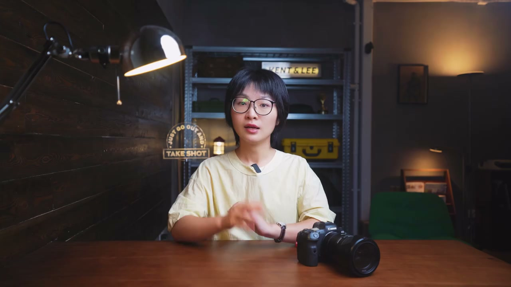
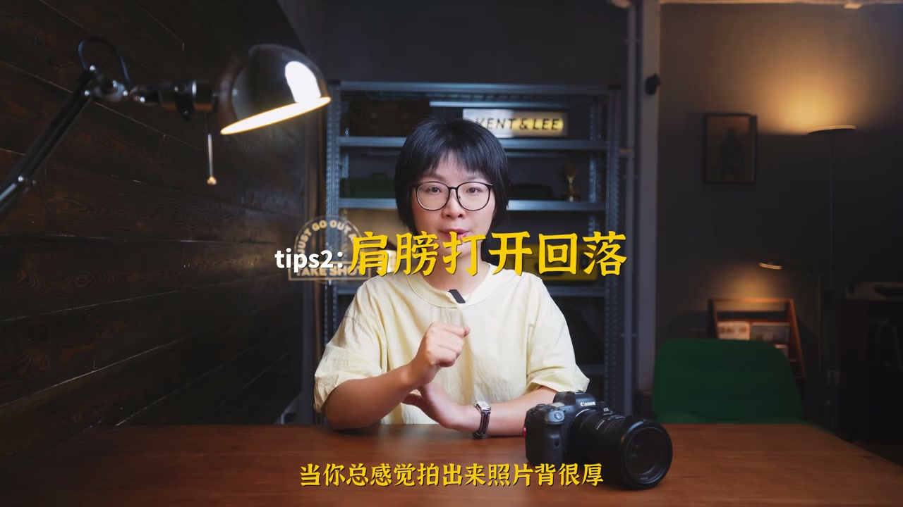
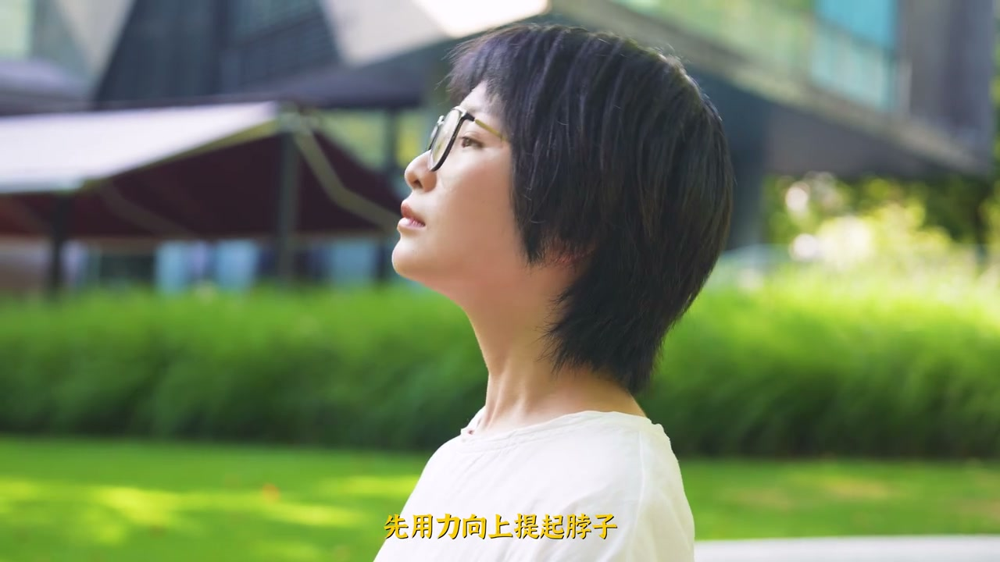
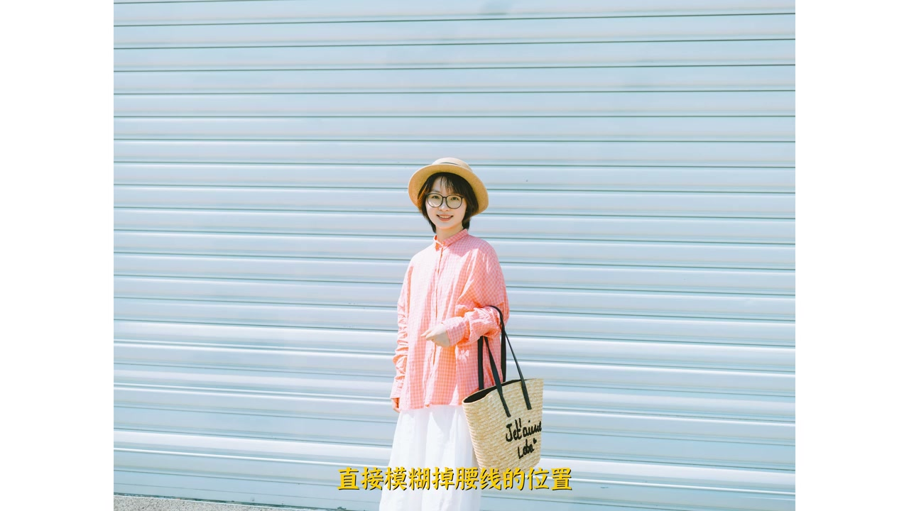
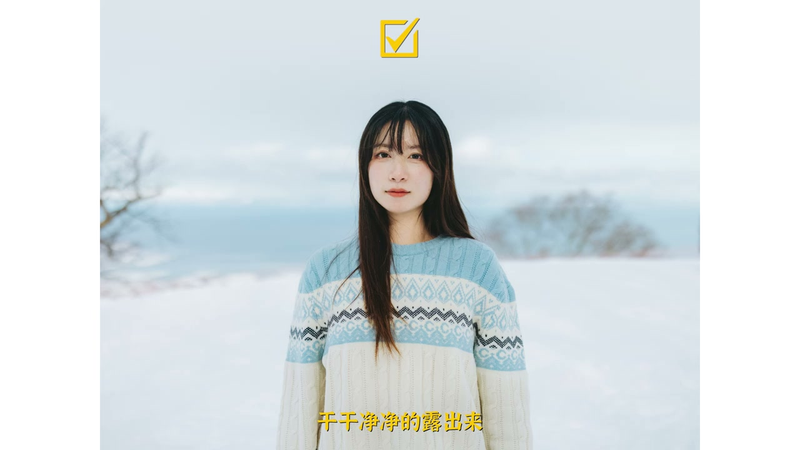
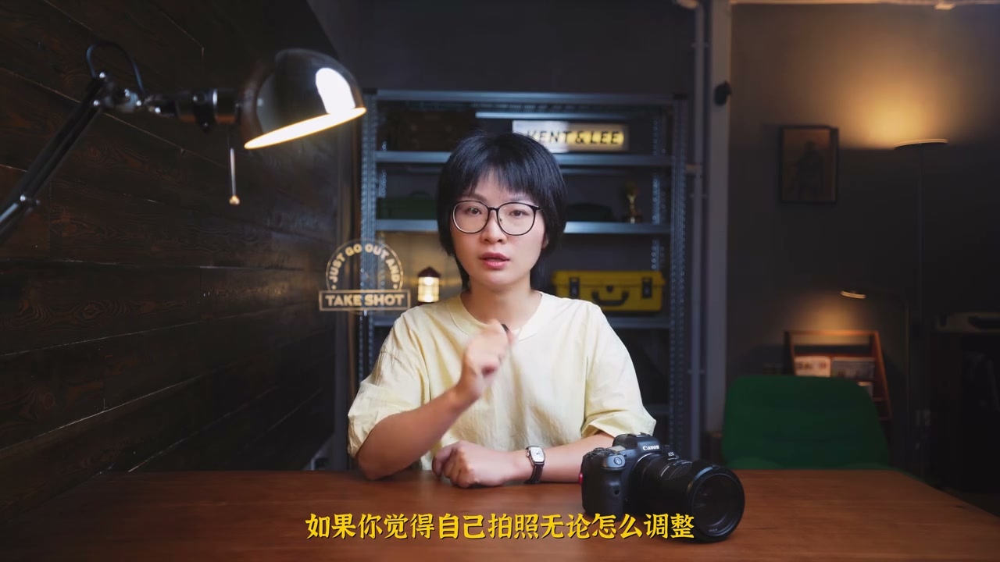
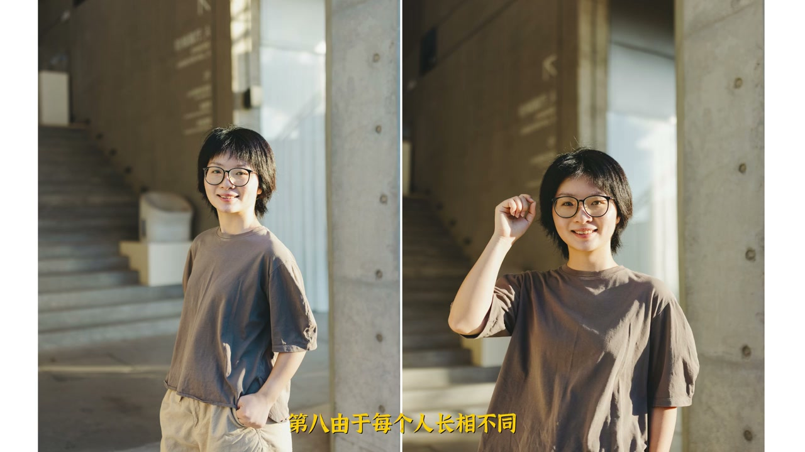
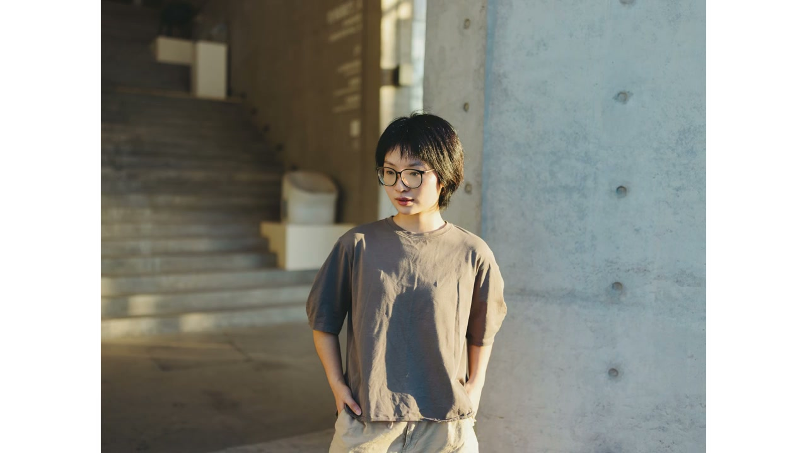

内容要点
[00:00] 上镜显胖
[00:01] 一直是我们日常拍照最常见的问题
[00:03] 除了后期大力出奇迹
[00:05] 我们拍的时候
[00:06] 又该如何调整
[00:07] 才能更自然的让自己在镜头中相对显瘦一点
[00:12] 除非你非常瞄调
[00:13] 四肢极其修长
[00:15] 不然不要去做任何挤压之起的动作
[00:18] 会大大加剧肉感
[00:19] 无论是正面还是侧面
[00:21] 手臂尽量离开一点身体
[00:24] 给出一点空间
[00:25] 会瞬间轻易不少
[00:27] 当你总感觉拍出来的照片
[00:29] 背很厚
[00:30] 肩很圆
[00:31] 人很笨重的时候
[00:32] 一个动作可以缓解
[00:33] 背部向后打开
[00:35] 然后向下回落定住
[00:37] 这样不光是显瘦
[00:38] 主要是优化了整个人的上镜状态
[00:41] 当然这只是真的拍照
[00:43] 给到大家的方法
[00:44] 真有体态问题
[00:45] 还是需要去科学改善
[00:47] 非常典型的
[00:49] 脖子肥大或是双下巴问题
[00:51] 同样也可以用一个动作去改善
[00:54] 先用力向上提起脖子
[00:56] 然后向前碳出一点
[00:57] 再回落
[00:58] 大家一定要记住
[00:59] 不仅视觉
[01:00] 是改善上镜险胖问题的绝对核心
[01:04] 我们拍照无论在穿搭还是在构图上
[01:07] 一定要学会模糊比例
[01:09] 比如我
[01:10] 实际只有一米五多
[01:11] 穿着最简单的T恤和短裤
[01:13] 拍一张全身照
[01:15] 有了明确的腰线
[01:16] 就会暴露我并不理想的身材比例
[01:18] 那如果在穿搭上
[01:20] 选择自带反型的连衣裙
[01:22] 或者是宽松下落的胜意
[01:24] 直接模糊掉腰线的位置
[01:25] 是不是就好很多
[01:27] 更粗暴的方式
[01:28] 构图上直接拍半身
[01:30] 这样倒不会把矮个子拍得显高
[01:32] 但的确会显瘦
[01:34] 如果你是上半身偏胖的苹果型身材
[01:37] 拍照时
[01:38] 肩膀到脖子区域
[01:39] 要避开太多元素
[01:41] 比如冒山
[01:41] 太大的翻灵
[01:42] 以及秋冬天的围巾
[01:44] 都会强化脖颈视觉的厚重感
[01:46] 那穿搭上
[01:47] 还不如把脖子干干净净的露出来
[01:50] 如果完全顺着光拍
[01:52] 肯定会把人拍得很扁平
[01:54] 想要显瘦
[01:55] 一定要学会使用侧光
[01:57] 最合适的时间是
[01:59] 下午太阳较低
[02:00] 且光线比较柔和的时候
[02:02] 你可以根据自己的脸型
[02:03] 决定是往顺光一些
[02:05] 还是往逆光一些
[02:06] 这样不仅仅是脸上的阴影
[02:08] 四肢的阴影
[02:09] 也是显瘦的关键
[02:11] 如果你觉得自己拍照
[02:12] 无论怎么调整
[02:14] 都显胖
[02:14] 那你先别急
[02:15] 直接选择90度调整法
[02:18] 正脸就完全正
[02:19] 侧脸就完全侧
[02:21] 身体也是一样
[02:22] 这个方法有些极端
[02:23] 你能找到自己显瘦的角度
[02:25] 当然更好
[02:26] 但你实在觉得
[02:27] 自己的脸型和身材
[02:29] 很不上镜
[02:30] 或者不确定
[02:31] 目前的镜头焦段
[02:32] 会不会把人压缩了
[02:34] 或是变形了
[02:35] 那这样做
[02:35] 至少能保住下线
[02:38] 由于每个人长相不同
[02:39] 有人抬头好看
[02:40] 有人低头好看
[02:41] 这个没错
[02:42] 但对于大多普通人来说
[02:44] 但凡拍摄视角
[02:46] 会展示到你的正脸
[02:47] 那还是优先向下调整比较好
[02:49] 毕竟让下巴
[02:50] 还有下额面往上走
[02:52] 会弱化阴影
[02:53] 往下走
[02:54] 才会强化阴影
[02:55] 只要憋挤压脖子
[02:57] 肯定会显瘦一些
[02:58] 幅度上
[02:59] 你可以根据自己的脸型情况
[03:01] 去调整
[03:02] 以上就是
[03:03] 环节拍照显磅问题的
[03:05] 八个实用技巧
[03:06] 希望对各位有所帮助
[03:07] 当然想要学习更详尽
[03:09] 更系统的
[03:10] 人像摄影知识
[03:11] 可以去我的课程栏目里了解一下
[03:13] 里面有我最新开发的课程
[03:15] 目前在持续更新中
[03:16] 我是这里
[03:17] 让所有普通人
[03:18] 都能拍出好看照片的摄影师小李
[03:20] 我们下期再见







